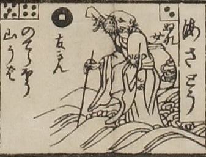

海座頭；ウミザトウ，男；オトコ

海座頭。坊主が目を閉じて、右手に杖を持ち、波の上を歩いている。袖の長い着物をまとい、背には袋に入った琵琶を背負っている。
出典：親書誌：U426_nichibunken_0082：新版妖怪飛巡雙六；シンパンヨウカイトビマハリスゴロク／日付：2007／資源識別子：U426_nichibunken_0082_0015_0000
Copyright (c)2010- International Research Center for Japanese Studies, Kyoto, Japan. All rights reserved.